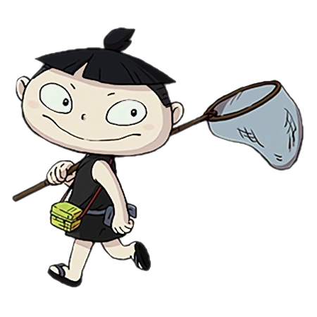
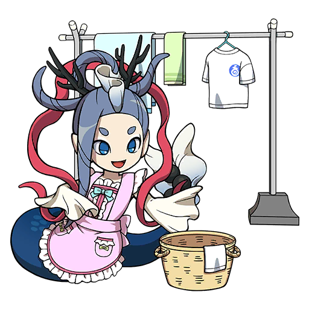

What's new?
Hello everyone!
I've decided to make this small update since Christmas is already over.
There isn't much added in this update since it was mostly made to un-festivize this website,
athough there are still some minor changes in this update (which I originally planned to release with a bigger update).

What's new: Added more data on yokai, moves and items. Improved UI of Team Builder page so it's easier to use it. I might add more features in the future, although they will depend on what would you like to see next. This website is focused on creating tools and providing information to the players although if you're interested in other things such as RAM editing or some other feature, feel free to message me about it and I might add it in the next update if it's not too complicated to code in. Hope all of you will have a great day! Below you can see all content that was added before.
If you have any questions, you can contact me through my discord: @hilwin Updates: 2.0.0: • Overhaul to the various databases with new data • Minor change to damage calculator • New yokai medals and artwork • Added in yokai creator 1.1.0: • Added Yo-Kai Data, that contains all of Yokai attacks and skills! • Added two more Wallpapers: "Oh My Swirls! Pattern", "Hearts and Fluff" • Divided Background into two separate parts • Added new icons to various pages! • Fixed various bugs related to IV, GYM and Attitude inputs • Fixed bug related to techniques not being found in damage calculator • Added missing Yokai to Yokai Database 1.0.0: • Added Tier Sheet, showing where each yokai is in the tiers. • Added moving Wallpapers! (Can be changed in top right corner; See below to see all new Wallpapers) • New design for Strategy Medallium • New design for Team Builder, added option to edit Yokai's stats, added Equipment (and Soul Gem) list • Added search option for some pages • Added Equipment List page • Added more fonts (See below for more information)